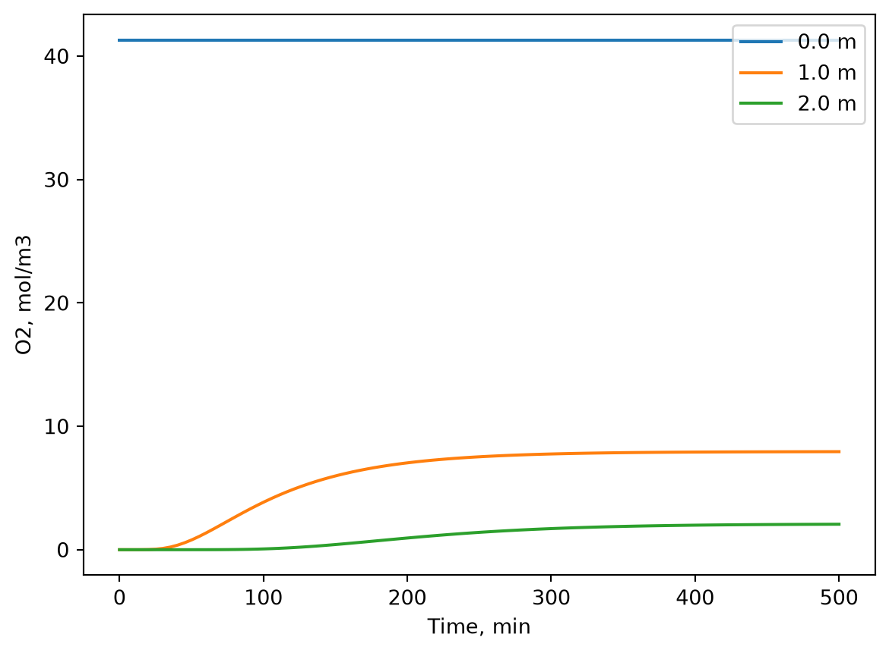

import numpy as np
from scipy.integrate import solve_ivp
import matplotlib.pyplot as plt
L = 2 # m long reactor
dx = 0.1 # m space between nodes
x_grid = np.arange(0, L+dx,dx)
tmax = 500 # minutes, to try something
k_r = 0.01 # 1/min, reaction rate constant
D = 2*10**(-5)*60 # m2/min, from internet
v = 0.003759 # m/min, pick some velocity and tune up or down
c0 = np.zeros(len(x_grid)) # initial condition vector
c0[0] = 41.3 # moles/m3. This number estimated from the
# ideal gas law at 1 atm and 20 deg C
# n = P*V/(R*T) = 1 atm * 1000 L/(0.08257 L atm/(mol K) * 293 K) = 41.3 moles/m3
c_outlet_aim = 0.05 * 41.3 # this is what we aim for at the reactor end
# making the dc/dt function
def dcdt(t, c, k_r, D, v, dx):
dcdt = np.zeros(len(c))
N = len(c)-1
# constant concentration at inlet, because we feed with a constant flow
# of pure oxygen. We fix that by setting dc/dt at the left side to 0.
dcdt[0] = 0
# at right side we actually have dcdx = 0! why is that?
# because if the PFR is open in the right end and we don't know what goes
# on outside the reactor, we might as well assume that nothing happens
# this means that the concentration does not change with x outside
# the reactor, which is the same as dcdx[N] = 0. We can implement this using
# a ghost point and realising that c[N+1] = c[N-1]. Then substituting into
# diffusion term. Reaction is added as first order.
# notice also that we use backward difference for the advection term
# to get stable solution
dcdt[N] = -v*(c[N] - c[N-1])/dx + D * (c[N-1] -2*c[N] + c[N-1])/dx**2 - k_r * c[N]
# interior loop
for i in range(1, N):
dcdt[i] = -v*(c[i] - c[i-1])/dx + D * (c[i-1] -2*c[i] + c[i+1])/dx**2 - k_r * c[i]
return dcdt
sol = solve_ivp(dcdt, [0, tmax], c0, method = 'BDF', t_eval = np.linspace(0, tmax, 100),
args = (k_r, D, v, dx))
plt.clf()
plt.close()
plt.ioff()
for i in range(0, len(x_grid), 10):
plt.plot(sol.t, sol.y[i], label = f'{i*dx} m')
plt.legend(loc = 1)
plt.xlabel('Time, min')
plt.ylabel('O2, mol/m3')
plt.show()
f'The concentration at the end PFR is around {sol.y[-1][-1]} moles/m3 at a flow velocity of {v}'
# The steady state is reached around 300 min after startup
# Instead of guessing on v (velocity), we could also solve it with fsolve()
# Lets try that.
from scipy.optimize import fsolve
def residual(v_guess):
"""Run the reactor for a given v and return difference from target outlet."""
v_guess = float(v_guess[0])
sol = solve_ivp(
dcdt, [0, tmax], c0, method='BDF',
t_eval=[tmax], args=(k_r, D, v_guess, dx)
)
c_outlet = sol.y[-1, -1] # outlet concentration at final time
return c_outlet - c_outlet_aim
init_v_guess = 0.01
solution = fsolve(residual, [init_v_guess])
f'The velocity needs to be {solution} m/min in order to achieve a 95% conversion'
'The velocity needs to be [0.00375978] m/min in order to achieve a 95% conversion'